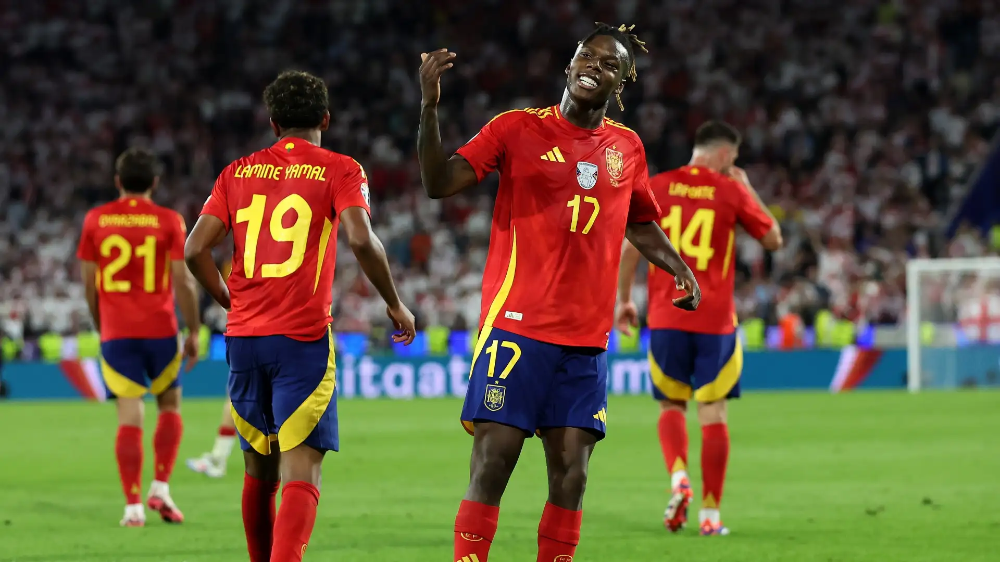
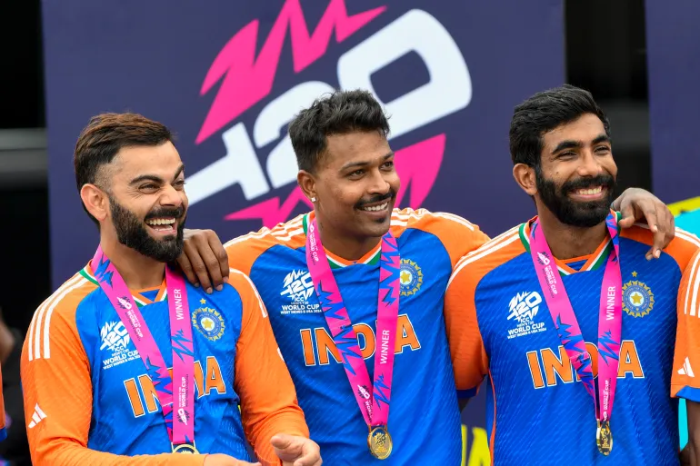

Welcome to the Sports Blog
This is where you'll find the latest news, updates, and commentary on your favorite sports.
SPAIN CROWNED AS EURO'S CHAMPIONS
In a spectacular display of skill and determination, Spain clinched the 2024 Euro Cup, cementing their status as one of Europe's football powerhouses. The final, held in Munich's iconic Allianz Arena, saw La Roja triumph over their formidable opponents with a blend of tactical brilliance and individual flair. Throughout the tournament, Spain's blend of seasoned veterans and rising stars showcased fluid passing, impenetrable defense, and clinical finishing. Their journey to the title included thrilling victories against top-tier teams, with standout performances from their midfield maestros and a rock-solid defense that conceded minimal goals. This victory marks a significant milestone in Spanish football, rekindling the nation's glory days and inspiring a new generation of football enthusiasts.
INDIA WINS AFTER 17 YEARS!
Bridgetown, Barbados - For India, the 13-year wait finally ended on a glorious day in Barbados. For South Africa, the endless agony goes on, with no guarantee if or when it will end. But the spectacle these two teams produced at the Kensington Oval in Bridgetown was more than worthy of a World Cup final. It was a contest that swayed back and forth, each blow followed by an equally brutal counterpunch that left the result in the balance until the final moments.